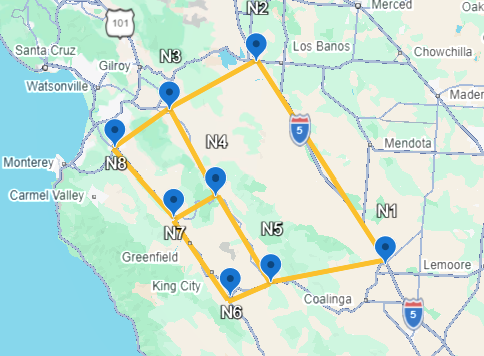
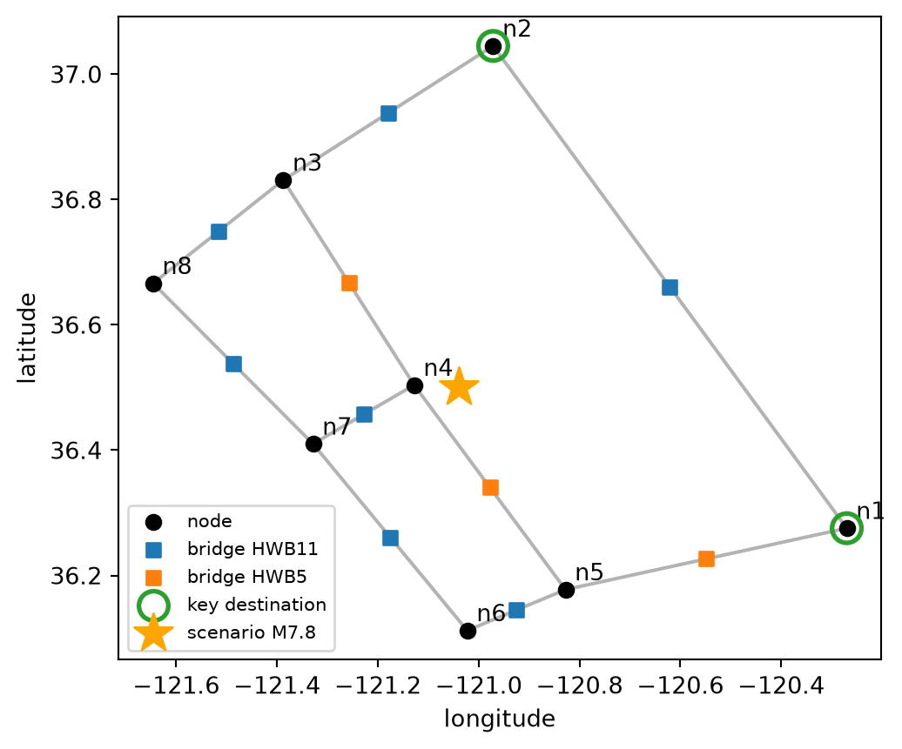

import json, os, sys
from pathlib import Path
ROOT = next(p for p in [Path.cwd(), *Path.cwd().parents] if (p / "pyproject.toml").is_file())
os.chdir(ROOT)
sys.path.insert(0, str(ROOT))Toy network demo
This is an illustration using the toy network toy-ca.
1. The network dataset
The network is one file, examples/toy-ca/network.json, with one table per entity type.
data = json.loads(Path("examples/toy-ca/network.json").read_text(encoding="utf-8"))
{table: len(rows) for table, rows in data["tables"].items()}{'Node': 8, 'Edge': 10, 'Bridge': 10, 'Event': 1}One row of each table:
for table in ("Node", "Edge", "Bridge", "Event"):
print(f"{table:7}", json.dumps(data["tables"][table][0]))Node {"id": "n1", "lat": 36.2754377087278, "lon": -120.2697236285474, "key_destination": true}
Edge {"id": "e1", "source": "n1", "target": "n2", "directed": false, "length_km": 106.011906, "capacity": 1, "avg_speed_kph": 60}
Bridge {"id": "b1", "lat": 36.66025089106477, "lon": -120.62045329929501, "edge": "e1", "hazus_class": "HWB11"}
Event {"id": "demo-san-andreas", "mw": 7.8, "lat": 36.5, "lon": -121.04, "depth_km": 10.0, "description": "Hypothetical M7.8 on the San Andreas trace, at the network's centre latitude"}The tables:
import pandas as pd
nodes = pd.DataFrame(data["tables"]["Node"]).set_index("id")
edges = pd.DataFrame(data["tables"]["Edge"]).set_index("id")
bridges = pd.DataFrame(data["tables"]["Bridge"]).set_index("id")
nodes| lat | lon | key_destination | |
|---|---|---|---|
| id | |||
| n1 | 36.275438 | -120.269724 | True |
| n2 | 37.045064 | -120.971183 | True |
| n3 | 36.830997 | -121.387529 | False |
| n4 | 36.503901 | -121.127879 | False |
| n5 | 36.177421 | -120.827670 | False |
| n6 | 36.112167 | -121.022557 | False |
| n7 | 36.409971 | -121.328475 | False |
| n8 | 36.666199 | -121.645813 | False |
edges| source | target | directed | length_km | capacity | avg_speed_kph | |
|---|---|---|---|---|---|---|
| id | ||||||
| e1 | n1 | n2 | False | 106.011906 | 1 | 60 |
| e2 | n1 | n5 | False | 51.220587 | 1 | 60 |
| e3 | n2 | n3 | False | 43.998194 | 1 | 60 |
| e4 | n3 | n4 | False | 43.118452 | 1 | 60 |
| e5 | n3 | n8 | False | 29.417095 | 1 | 60 |
| e6 | n4 | n5 | False | 45.176621 | 1 | 60 |
| e7 | n4 | n7 | False | 20.759042 | 1 | 60 |
| e8 | n5 | n6 | False | 18.944186 | 1 | 60 |
| e9 | n6 | n7 | False | 42.998648 | 1 | 60 |
| e10 | n7 | n8 | False | 40.193808 | 1 | 60 |
bridges| lat | lon | edge | hazus_class | |
|---|---|---|---|---|
| id | ||||
| b1 | 36.660251 | -120.620453 | e1 | HWB11 |
| b2 | 36.226429 | -120.548697 | e2 | HWB5 |
| b3 | 36.938031 | -121.179356 | e3 | HWB11 |
| b4 | 36.667449 | -121.257704 | e4 | HWB5 |
| b5 | 36.748598 | -121.516671 | e5 | HWB11 |
| b6 | 36.340661 | -120.977775 | e6 | HWB5 |
| b7 | 36.456936 | -121.228177 | e7 | HWB11 |
| b8 | 36.144794 | -120.925114 | e8 | HWB11 |
| b9 | 36.261069 | -121.175516 | e9 | HWB11 |
| b10 | 36.538085 | -121.487144 | e10 | HWB11 |
The schemas the file is checked against: its shape, from its $schema, and each table’s columns, from schema/entities.json.
from jsonschema import Draft202012Validator
shape = json.loads(Path("schema/meta/network.schema.json").read_text(encoding="utf-8"))
print("$schema:", data["$schema"])
print("shape errors:", list(Draft202012Validator(shape).iter_errors(data)))$schema: ../../schema/meta/network.schema.json
shape errors: []entities = {e["id"]: e for e in json.loads(Path("schema/entities.json").read_text(encoding="utf-8"))["entities"]}
columns = []
for table, records in data["tables"].items():
attrs = entities[table]["attributes"]
in_file = set().union(*(r.keys() for r in records)) - {"id"}
for name, spec in attrs.items():
columns.append({"table": table, "column": name,
"schema type": f"-> {spec['ref']}" if "ref" in spec else spec["type"],
"required": spec.get("required", True), "in file": name in in_file})
for name in sorted(in_file - attrs.keys()):
columns.append({"table": table, "column": name, "schema type": "NOT IN SCHEMA", "required": None, "in file": True})
columns = pd.DataFrame(columns)
columns| table | column | schema type | required | in file | |
|---|---|---|---|---|---|
| 0 | Node | lat | number | True | True |
| 1 | Node | lon | number | True | True |
| 2 | Node | population | number | False | False |
| 3 | Node | name | string | False | False |
| 4 | Node | key_destination | boolean | True | True |
| 5 | Edge | source | -> Node | True | True |
| 6 | Edge | target | -> Node | True | True |
| 7 | Edge | directed | boolean | True | True |
| 8 | Edge | length_km | number | True | True |
| 9 | Edge | capacity | integer | True | True |
| 10 | Edge | avg_speed_kph | number | True | True |
| 11 | Bridge | lat | number | True | True |
| 12 | Bridge | lon | number | True | True |
| 13 | Bridge | edge | -> Edge | True | True |
| 14 | Bridge | hazus_class | string | True | True |
| 15 | Bridge | vs30 | number | False | False |
| 16 | Bridge | vs30_source | string | False | False |
| 17 | Event | mw | number | False | True |
| 18 | Event | lat | number | False | True |
| 19 | Event | lon | number | False | True |
| 20 | Event | depth_km | number | False | True |
| 21 | Event | description | string | False | True |
They match: every required column is in the file, and the file has no column the schema lacks.
missing = columns[columns.required.eq(True) & ~columns["in file"]]
extra = columns[columns["schema type"] == "NOT IN SCHEMA"]
print("required but missing:", missing[["table", "column"]].values.tolist())
print("in file, not in schema:", extra[["table", "column"]].values.tolist())required but missing: []
in file, not in schema: []Every assumed value is named in the file:
for key, text in data["assumptions"].items():
print(f"- {key}: {text}")- direction: All connections are treated as undirected.
- length_km: Great-circle distance between endpoint coordinates using a spherical Earth radius of 6371.0088 km; not road distance.
- capacity: Each edge has placeholder capacity 1 in arbitrary units; no measured capacities were supplied.
- bridge_representation: One bridge per edge; these are synthetic bridges for the toy example.
- bridge_location: Each bridge is placed at the arithmetic mean of its edge endpoints latitude and longitude; not a surveyed location.
- bridge_class: Seven bridges HWB11 (seismically designed continuous concrete); b2, b4 and b6, the three nearest the San Andreas trace, HWB5 (older, non-seismic) for the demo. Toy assumptions, not an inventory classification.
- avg_speed_kph: 60 km/h on every edge, assumed (the value the rsr and ndtools demos use); no measured speeds are in the dataset.
- key_destination: Key destinations n1 and n2, as set by the user.
- event: Hypothetical M7.8 as a point source on the San Andreas trace at 36.50 N, 121.04 W, 10 km deep, for the demo only. This is the creeping section, not the 1857 rupture; a point source understates shaking along a ~300 km rupture.The map:

import matplotlib.pyplot as plt
import numpy as np
fig, ax = plt.subplots(figsize=(6, 5))
for _, e in edges.iterrows():
a, b = nodes.loc[e.source], nodes.loc[e.target]
ax.plot([a.lon, b.lon], [a.lat, b.lat], color="0.7", zorder=1)
ax.scatter(nodes.lon, nodes.lat, s=40, color="k", zorder=2, label="node")
for cls, group in bridges.groupby("hazus_class"):
ax.scatter(group.lon, group.lat, s=35, marker="s", zorder=3, label=f"bridge {cls}")
key = nodes[nodes.key_destination]
ax.scatter(key.lon, key.lat, s=160, facecolors="none", edgecolors="tab:green", linewidths=2, zorder=4,
label="key destination")
event = data["tables"]["Event"][0]
ax.scatter(event["lon"], event["lat"], marker="*", s=300, color="orange", zorder=5, label=f"scenario M{event['mw']}")
for nid, n in nodes.iterrows():
ax.annotate(nid, (n.lon, n.lat), xytext=(4, 4), textcoords="offset points")
ax.set_aspect(1 / np.cos(np.radians(nodes.lat.mean())))
ax.set_xlabel("longitude")
ax.set_ylabel("latitude")
ax.legend(loc="lower left", fontsize=8)
plt.show()
Loading the network checks every row against schema/entities.json:
from src.builder.load import check_tables, load_library, load_network
lib = load_library() # schema/ and instances/
net = load_network("toy-ca", lib)
{entity: len(rows) for entity, rows in net.tables.items()}{'Node': 8, 'Edge': 10, 'Bridge': 10, 'Event': 1}A broken row is refused, with the reason:
broken = json.loads(json.dumps(net.tables))
broken["Bridge"][0]["edge"] = "e99"
broken["Edge"][0].pop("avg_speed_kph")
_, problems = check_tables(broken, lib, "toy-ca (edited)")
problems["toy-ca (edited): Edge 'e1': missing required attribute 'avg_speed_kph'",
"toy-ca (edited): Bridge 'b1': edge = 'e99' is not a Edge row"]